VixenWear Latex Ultra Inspector
A complete control-by-control reference for the VixenWear Editor. Every option in every tab is documented below, grouped exactly the way the inspector groups it. Each screenshot is a live capture of the shader inspector - click any panel to expand it. The six tabs are BASE, SURFACE, POLISH, INTEGRATION, AUDIOLINK, and STAGE.
Built-in Render Pipeline / VRChat only - as a surface shader it does not compile under HDRP or URP. Every world-lighting integration (Light Volumes, LTCGI, AreaLit, VRSL) is fail-safe: it strips or no-ops cleanly in worlds that lack the system.
BASE
Base color, albedo, alpha cutoff, and UV animation.
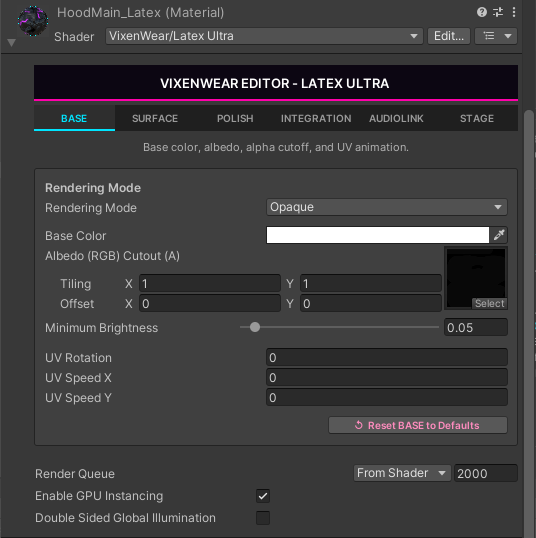
Rendering Mode
-
Rendering Mode - Selects the blend preset:
Opaque,Cutout,Fade, orTransparent. This single dropdown drives blend state, ZWrite, render queue, and theRenderType/VRCFallbacktags throughSetupMaterialWithBlendMode. Fade uses straight alpha; Transparent uses premultiplied alpha so specular survives at low opacity (the correct mode for glass and wet-look latex); Cutout uses the hardclip()threshold. - Base Color [Albedo (RGB) Cutout (A)] - The main color tint and texture slot. RGB multiplies the albedo; the Alpha channel carries the Cutout threshold in Cutout mode. Use the eyedropper to sample a color, or assign a texture in the Select box on the right.
- Tiling (X / Y) - UV scale for the albedo / main texture. Values above 1 repeat the texture; values below 1 zoom in.
- Offset (X / Y) - UV shift for the albedo / main texture, in UV units.
- Minimum Brightness - A floor on the final lit result so the surface never crushes to pure black in unlit or very dark worlds. Raise it slightly to keep the silhouette readable in dim instances.
UV Animation
- UV Rotation - A static angular rotation applied to the surface UVs, in degrees.
- UV Speed X - Horizontal UV scroll speed over time. Positive scrolls one way, negative the other.
- UV Speed Y - Vertical UV scroll speed over time. Combine with Speed X for diagonal flow.
Tab Tools
-
Reset BASE to Defaults - Restores only this tab's properties to the shader's
default values (spawned from a hidden defaults material) and re-runs
SetupMaterialWithBlendModesoRendering Modetakes visual effect immediately. Right-click the tab header for Copy, Paste (Values Only), Paste (With Textures), and the same reset. - The shared Render Queue, Enable GPU Instancing, and Double Sided Global Illumination row sits at the bottom of every tab - see Shared Footer.
SURFACE
PBR maps, normals, parallax, and micro detail shaping.
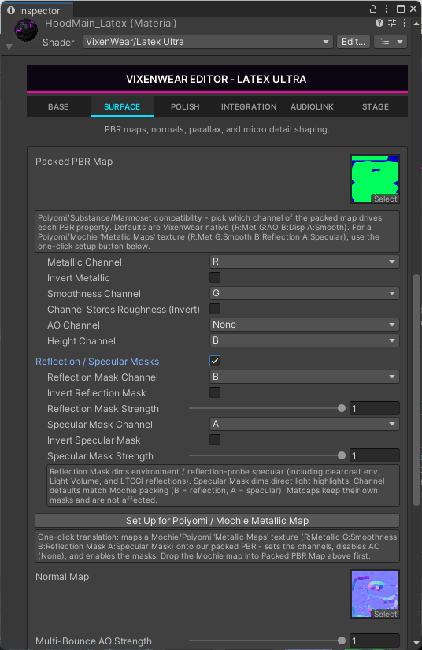
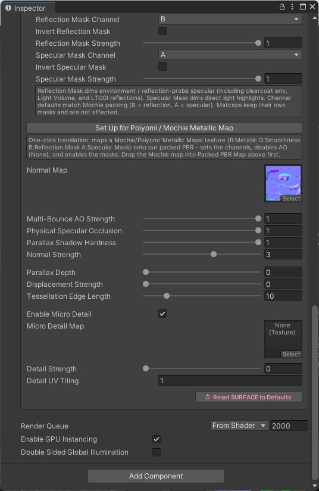
Packed PBR Map
A single RGBA texture keeps VRAM efficient. The channel pickers below tell the shader which channel holds which property, so Poiyomi / Substance / Marmoset packings drop in without re-authoring. Default packing is R Metallic, G AO, B Displacement / Height, A Smoothness.
-
Packed PBR Map - The texture slot for the packed map. The
ChannelPickhelper routes the choices below through every consumer (parallax raymarch, BRDF shadow trace, surface metallic/smoothness, AO, height, vertex displacement). - Metallic Channel - Which channel (R/G/B/A) supplies metalness.
- Invert Metallic - Flips the metallic read (1 - value) for sources stored inverted.
- Smoothness Channel - Which channel supplies smoothness.
- Channel Stores Roughness (Invert) - Enable when the chosen channel holds roughness instead of smoothness; the shader inverts it on read.
-
AO Channel - Which channel supplies ambient occlusion, or
Noneto disable AO sampling. - Height Channel - Which channel supplies the displacement / height value used by parallax and tessellation.
Reflection / Specular Masks
Master toggle that reads two more channels off the packed map. Reflection Mask dims environment and reflection-probe specular (including clearcoat env, Light Volume, and LTCGI reflections); Specular Mask dims direct-light highlights. Channel defaults match Mochie packing (B reflection, A specular). Matcaps keep their own masks and are not affected.
- Reflection / Specular Masks - Enables the masked-reflection block.
- Reflection Mask Channel - Which channel drives the reflection mask.
- Invert Reflection Mask - Flips the reflection mask read.
- Reflection Mask Strength - How strongly the mask attenuates environment / reflection specular (0 = no effect, 1 = full mask).
- Specular Mask Channel - Which channel drives the direct-highlight mask.
- Invert Specular Mask - Flips the specular mask read.
- Specular Mask Strength - How strongly the mask attenuates direct-light highlights.
-
Set Up for Poiyomi / Mochie Metallic Map - One-click translation: maps a
Mochie/Poiyomi "Metallic Maps" texture (R Metallic, G Smoothness, B Reflection Mask, A Specular
Mask) onto the packed PBR slot, sets the channels, disables AO (
None), and enables the masks. Drop the Mochie map into Packed PBR Map above first.
Normals & Occlusion
- Normal Map - Tangent-space normal map for macro surface detail (leather grain, latex pores).
- Multi-Bounce AO Strength - Strength of the multi-bounce ambient-occlusion term applied from the AO channel.
- Physical Specular Occlusion - How much AO also occludes specular / reflections, preventing glow in cavities that should be shadowed.
- Parallax Shadow Hardness - Sharpness of the self-shadowing cast inside recessed seams by the parallax raymarch.
- Normal Strength - Intensity multiplier for the normal map. Higher values deepen the perceived relief.
Parallax, Displacement & Tessellation
- Parallax Depth - Depth of the 50-step adaptive gradient raymarch that fakes height inside the surface. 0 disables parallax.
- Displacement Strength - Real geometric height pushed along the normal from the height channel (requires tessellation to have vertices to move).
- Tessellation Detail - How densely DX11 hardware tessellation subdivides the mesh for displacement, from 0 (coarse / cheap) to 1 (dense / smoother). The amount is distance and screen-size adaptive, so far or small-on-screen surfaces stay cheap, and the per-edge factor is capped so it can't run away. Leave at 0 if you aren't using Displacement Strength. Base shader only; the SPS variant has no tessellation stage.
Micro Detail
- Enable Micro Detail - Turns on the secondary detail-normal layer.
- Micro Detail Map - A secondary detail normal map for fine pores or hex-grid patterns layered over the macro surface.
- Detail Strength - Intensity of the micro-detail normal.
- Detail UV Tiling - Independent tiling for the detail map so micro-texture can repeat at a different scale than the main UVs.
- Reset SURFACE to Defaults - Restores this tab's properties to shader defaults. The shared render-state row also appears below - see Shared Footer.
POLISH
Clearcoat, thin film, rim, and volumetric SSS thickness.
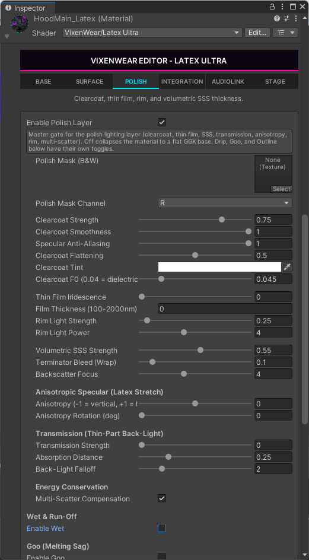
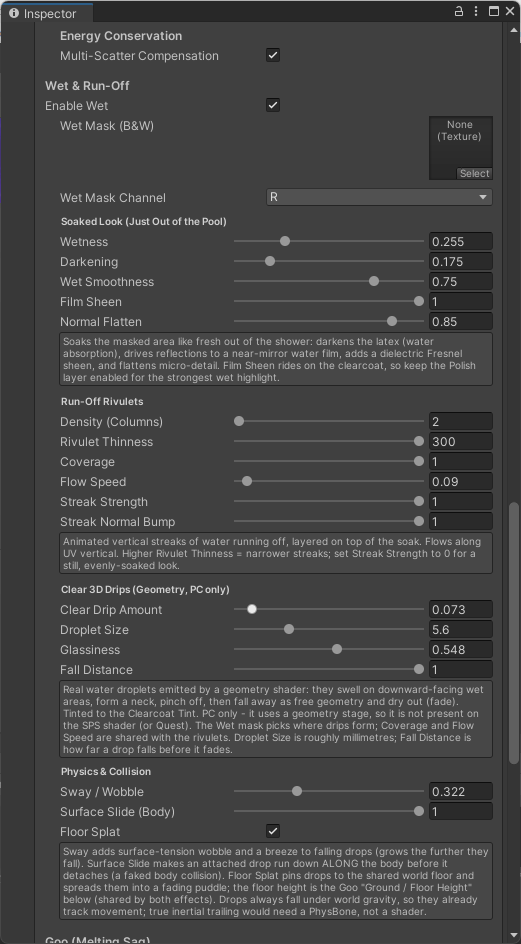
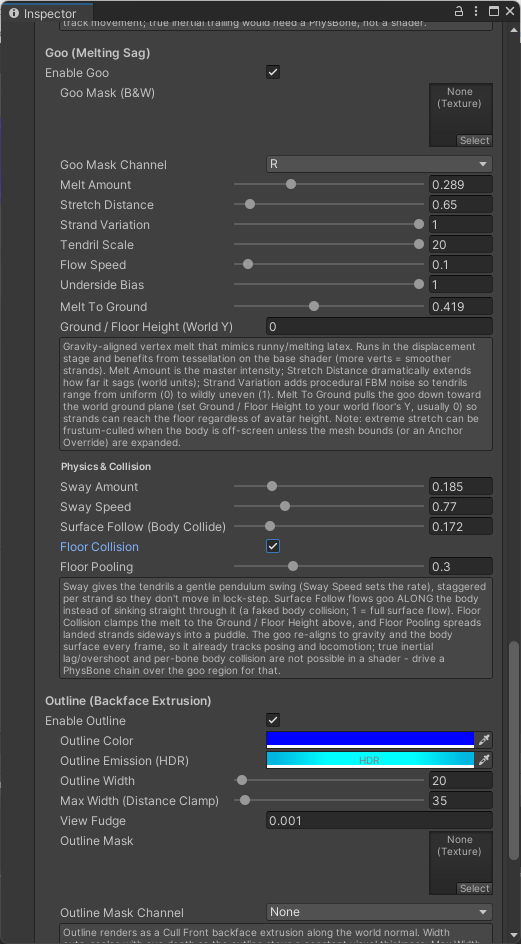
Polish Layer (Master Gate)
Master gate for the polish lighting layer (clearcoat, thin film, SSS, transmission, anisotropy, rim, multi-scatter). Off collapses the material to a flat GGX base. Drip, Goo, and Outline further down have their own toggles.
- Enable Polish Layer - Turns the whole polish stack on or off.
- Polish Mask (B&W) - Optional grayscale mask scoping the polish layer to painted regions.
- Polish Mask Channel - Which channel of the mask to read.
Clearcoat
- Clearcoat Strength - Intensity of the dielectric clear coat lobe layered over the base.
- Clearcoat Smoothness - Smoothness of the coat (1 = mirror-sharp gloss).
- Specular Anti-Aliasing - Toksvig-style geometric spec AA that roughens the normal from screen-space derivative variance, killing the spec sparkle at mid-distance.
- Clearcoat Flattening - Blends the coat's normal toward the geometric normal so the glossy film reads smooth over rough underlying texture.
- Clearcoat Tint - Color cast of the coat reflection. White is neutral; colored tints attenuate the under-layer per channel for oil-on-water looks.
-
Clearcoat F0 (0.04 = dielectric) - Base Fresnel reflectance of the coat.
0.04reproduces a standard dielectric exactly; higher values brighten the grazing-angle reflection.
Thin Film, Rim & SSS
- Thin Film Iridescence - Strength of the interference rainbow across the coat.
- Film Thickness (100-2000nm) - Optical thickness of the thin film, which sets which wavelengths shift and therefore the iridescent hue.
- Rim Light Strength - Intensity of the Fresnel rim glow around the silhouette.
- Rim Light Power - Tightness of the rim falloff. Higher values pull the rim into a thinner edge band.
- Volumetric SSS Strength - Strength of the subsurface scattering lobe for soft, skin-like light diffusion.
- Terminator Bleed (Wrap) - Wraps light past the shadow terminator so SSS bleeds gently into the dark side.
- Backscatter Focus - Tightness of the back-scatter highlight when light passes through thin geometry toward the viewer.
Anisotropic Specular (Latex Stretch)
- Anisotropy (-1 = vertical, +1 = horizontal) - Stretches the specular highlight along the tangent. 0 is isotropic; the sign chooses the stretch axis for real latex-pull highlights.
- Anisotropy Rotation (deg) - Rotates the anisotropic tangent around the normal, aligning the highlight to the visible stretch rather than the UV unwrap.
Transmission (Thin-Part Back-Light)
- Transmission Strength - Strength of light bleeding through thin parts (ears, fingers, latex membranes) from behind.
- Absorption Distance - Beer-Lambert absorption depth; shorter distances tint and darken the transmitted light faster.
- Back-Light Falloff - Angular tightness of the back-light term as the light moves behind the surface.
Energy Conservation
- Multi-Scatter Compensation - Filament/Frostbite multi-scatter energy compensation that adds back the energy lost at high roughness, keeping bright metals from going dull.
Wet & Run-Off
- Enable Wet - Master toggle for the wet / run-off layer.
- Wet Mask (B&W) - Grayscale mask choosing where the surface is wet and where drips form.
- Wet Mask Channel - Which channel of the wet mask to read.
Soaked Look (Just Out of the Pool) - Soaks the masked area: darkens the latex (water absorption), drives reflections to a near-mirror water film, adds a dielectric Fresnel sheen, and flattens micro-detail. Film Sheen rides on the clearcoat, so keep the Polish layer enabled for the strongest wet highlight.
- Wetness - Overall amount of the wet effect.
- Darkening - How much the soaked area darkens, simulating water absorption into the surface.
- Wet Smoothness - Smoothness of the water film (toward a near-mirror reflection).
- Film Sheen - Strength of the dielectric Fresnel sheen riding on the clearcoat.
- Normal Flatten - Flattens micro-detail under the film so the wet area reads slick.
Run-Off Rivulets - Animated vertical streaks of water running off, layered on top of the soak. Flows along UV vertical. Set Streak Strength to 0 for a still, evenly-soaked look.
- Density (Columns) - Number of rivulet columns across the surface.
- Rivulet Thinness - Width of each streak; higher values produce narrower streaks.
- Coverage - How much of the masked area the rivulets occupy (shared with the 3D drips).
- Flow Speed - Vertical scroll speed of the run-off (shared with the 3D drips).
- Streak Strength - Visual intensity of the streaks.
- Streak Normal Bump - How much each streak perturbs the normal for a raised, refractive bead.
Clear 3D Drips (Geometry, PC only) - Real water droplets emitted by a geometry shader: they swell on downward-facing wet areas, form a neck, pinch off, and fall away as free geometry, tinted to the Clearcoat Tint. PC only - it uses a geometry stage, so it is not present on the SPS shader or Quest. The Wet mask picks where drips form.
- Clear Drip Amount - How many droplets spawn across the wet area.
- Droplet Size - Approximate droplet diameter in millimetres.
- Glassiness - How clear / refractive the droplet looks versus a milky bead.
- Fall Distance - How far a drop falls before it fades out.
Physics & Collision (drips) - Sway adds surface-tension wobble and a breeze to falling drops (grows the further they fall). Surface Slide makes an attached drop run down along the body before it detaches (a faked body collision). Floor Splat pins drops to the shared world floor and spreads them into a fading puddle; the floor height is the Goo "Ground / Floor Height" below. Drops always fall under world gravity, so they already track movement.
- Sway / Wobble - Surface-tension wobble and breeze on falling drops.
- Surface Slide (Body) - How far an attached drop runs along the body before detaching (1 = full slide).
- Floor Splat - Pins landed drops to the shared world floor and spreads them into a fading puddle.
Goo (Melting Sag)
Gravity-aligned vertex melt that mimics runny / melting latex. Runs in the displacement stage and benefits from tessellation on the base shader (more verts = smoother strands). Runs on both shaders. Extreme stretch can be frustum-culled when the body is off-screen unless the mesh bounds (or an Anchor Override) are expanded.
- Enable Goo - Master toggle for the melting-sag system.
- Goo Mask (B&W) - Grayscale mask scoping where the latex melts.
- Goo Mask Channel - Which channel of the goo mask to read.
- Melt Amount - Master intensity of the melt.
- Stretch Distance - How far the goo sags, in world units; dramatically extends strand length.
- Strand Variation - Procedural FBM noise so tendrils range from uniform (0) to wildly uneven (1).
- Tendril Scale - Spatial scale of the tendril pattern.
- Flow Speed - How fast the melt animates / flows over time.
- Underside Bias - Biases melting toward downward-facing surfaces where latex would actually drip.
- Melt To Ground - Pulls the goo down toward the world ground plane so strands can reach the floor regardless of avatar height.
- Ground / Floor Height (World Y) - The world-space Y of your floor (usually 0), shared by both the goo and the drip floor splat.
Physics & Collision (goo) - Sway gives the tendrils a gentle pendulum swing (Sway Speed sets the rate), staggered per strand. Surface Follow flows goo along the body instead of sinking through it (a faked body collision; 1 = full surface flow). Floor Collision clamps the melt to the Ground / Floor Height, and Floor Pooling spreads landed strands sideways into a puddle. The goo re-aligns to gravity and the body surface every frame, so it tracks posing and locomotion; true inertial lag needs a PhysBone chain over the goo region.
- Sway Amount - Pendulum swing magnitude of the tendrils.
- Sway Speed - Rate of the sway.
- Surface Follow (Body Collide) - How much goo flows along the body instead of through it.
- Floor Collision - Clamps the melt to the floor height instead of passing through it.
- Floor Pooling - Spreads landed strands sideways into a puddle.
Outline (Backface Extrusion)
A keyword-gated Cull Front outline rendered ahead of the main forward pass as a backface extrusion along the world normal. The off state is the no-keyword default, so a material without outlines compiles at zero added cost.
- Enable Outline - Turns the backface outline pass on.
- Outline Color - Solid color of the outline shell.
- Outline Emission (HDR) - HDR glow color added to the outline for a neon edge.
- Outline Width - Extrusion thickness along the normal.
- Max Width (Distance Clamp) - Caps the apparent width at distance so the outline does not balloon far from camera.
- View Fudge - A small view-space offset to reduce z-fighting between the shell and the surface.
- Outline Mask - Optional mask restricting the outline to painted regions.
- Outline Mask Channel - Which channel of the outline mask to read.
INTEGRATION
Emission, MatCap, Light Volumes, LTCGI, and AreaLit illumination.
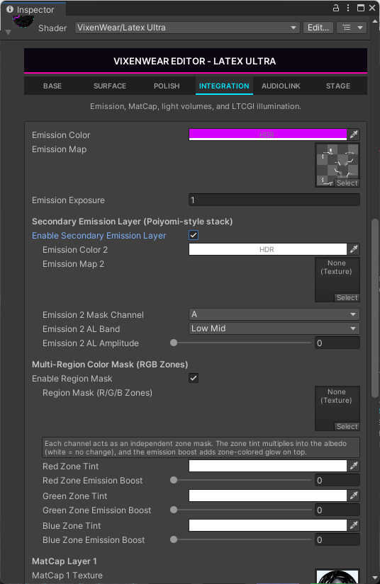
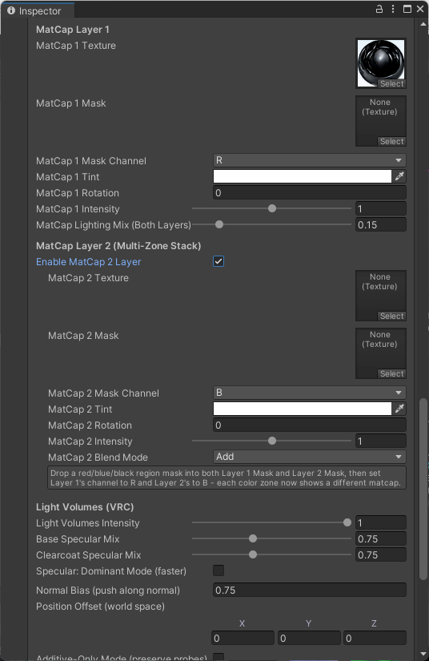
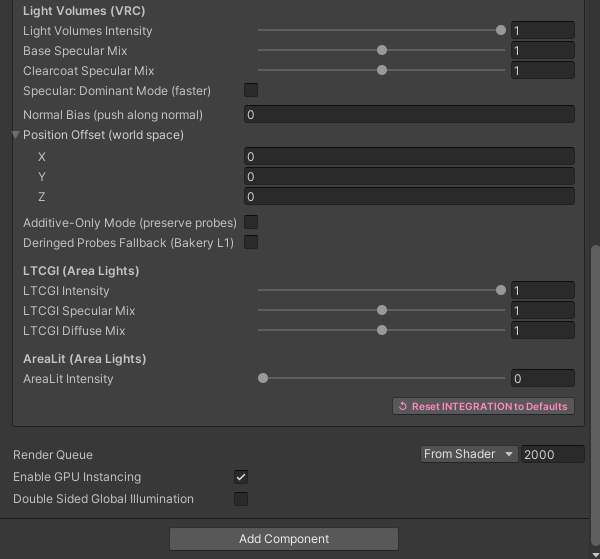
Emission
- Emission Color (HDR) - HDR tint and intensity of the primary emission.
- Emission Map - Texture defining where the surface emits.
- Emission Exposure - Extra exposure multiplier on top of the HDR color for fine bloom control.
Secondary Emission Layer (Poiyomi-style stack)
- Enable Secondary Emission Layer - Adds a fully independent second emission layer.
- Emission Color 2 (HDR) - HDR tint / intensity of the second layer.
- Emission Map 2 - Texture for the second emission layer.
- Emission 2 Mask Channel - Which channel masks the second layer.
- Emission 2 AL Band - Which AudioLink band (Bass / Low Mid / High Mid / Treble) reacts on this layer, so you can route bass to one circuit and treble to another.
- Emission 2 AL Amplitude - How strongly that band modulates the second layer's brightness.
Multi-Region Color Mask (RGB Zones)
Each channel acts as an independent zone mask. The zone tint multiplies into the albedo (white = no change), and the emission boost adds zone-colored glow on top, letting you paint hard-edged feature zones without a second material.
- Enable Region Mask - Turns on the three-zone color mask.
- Region Mask (R/G/B Zones) - The mask texture whose R, G, and B channels define three independent zones.
- Red Zone Tint - Albedo tint for the red zone.
- Red Zone Emission Boost - Added glow for the red zone.
- Green Zone Tint - Albedo tint for the green zone.
- Green Zone Emission Boost - Added glow for the green zone.
- Blue Zone Tint - Albedo tint for the blue zone.
- Blue Zone Emission Boost - Added glow for the blue zone.
MatCap Layer 1
MatCap math runs in view space (mul((float3x3)UNITY_MATRIX_V, nWorld)), so it stays
mirror-correct and never collapses to a stuck reflection point on flat geometry.
- MatCap 1 Texture - The material-capture sphere texture for layer 1.
- MatCap 1 Mask - Mask restricting layer 1 to painted regions.
- MatCap 1 Mask Channel - Which channel of the mask to read.
- MatCap 1 Tint - Color tint applied to the matcap.
- MatCap 1 Rotation - Rotates the matcap sample around the view.
- MatCap 1 Intensity - Brightness / contribution of layer 1.
- MatCap 1 Tiling (XY) - Repeats the matcap around its centre. Set the matcap texture's Wrap Mode to Repeat to see tiling above 1 actually repeat.
- MatCap 1 Scroll (X pan, Y pan, Z spin) - Smooth continuous motion off real time: X / Y pan the matcap and Z spins it in degrees per second. Leave at (0,0,0) for a static matcap; great for flowing holographic or animated iridescent latex.
- MatCap Lighting Mix (Both Layers) - How much scene lighting modulates both matcap layers versus reading them as pure unlit overlays.
MatCap Layer 2 (Multi-Zone Stack)
Drop a red/blue/black region mask into both Layer 1 Mask and Layer 2 Mask, then set Layer 1's channel to R and Layer 2's to B - each color zone now shows a different matcap.
- Enable MatCap 2 Layer - Adds a second matcap layer.
- MatCap 2 Texture - The matcap sphere texture for layer 2.
- MatCap 2 Mask - Mask restricting layer 2 to painted regions.
- MatCap 2 Mask Channel - Which channel of the mask to read.
- MatCap 2 Tint - Color tint applied to layer 2.
- MatCap 2 Rotation - Rotates the layer 2 sample around the view.
- MatCap 2 Intensity - Brightness / contribution of layer 2.
- MatCap 2 Tiling (XY) - Repeats the layer 2 matcap around its centre (Wrap Mode = Repeat to see it tile).
- MatCap 2 Scroll (X pan, Y pan, Z spin) - X / Y pan and Z spins the layer 2 matcap over time; (0,0,0) is static.
- MatCap 2 Blend Mode - How layer 2 combines with the result:
Add,Replace, orMultiply.
Light Volumes (VRCLV V3, New In 2.6.0)
A full Light Volumes stack rather than a single intensity slider. Output is clamped to suppress negative SH reconstruction artifacts that historically blacked out avatars on probes-only worlds.
Upgraded to Light Volumes V3: alongside baked volumes the suit now also receives Point Light Volumes - point lights, spot lights (parametric / attenuation-LUT / projected cookie), cubemap-tinted point lights, and quad area lights (the "TV GI" path: an area light driven by a video RenderTexture). Per-light EVSM shadows are supported as well. All of it projects into the same L1 spherical-harmonics path and rides the controls below, so no new sliders are needed. These lights only appear in worlds running the LV V3 runtime; older or no-LV worlds fall back to deringed light probes exactly as before.
- Light Volumes Intensity - Overall contribution of Light Volumes lighting.
- Base Specular Mix - How much Light Volume data feeds the base specular lobe.
- Clearcoat Specular Mix - How much Light Volume data feeds the clearcoat-specific specular.
- Specular: Dominant Mode (faster) - Uses the dominant light direction instead of the full L1 reconstruction for cheaper specular.
- Normal Bias (push along normal) - Offsets the sample point along the normal to fix light bleed at sharp edges.
- Position Offset (world space) X / Y / Z - Manual world-space sample offset for thin or sleeve geometry that samples the wrong cell.
- Additive-Only Mode (preserve probes) - Adds Light Volume light on top of Unity's probe baseline instead of replacing it.
- Deringed Probes Fallback (Bakery L1) - Opt-in Bakery L1 deringed-probe fallback for worlds without Light Volumes.
LTCGI (Area Lights)
- LTCGI Intensity - Master contribution of LTCGI area lighting.
- LTCGI Specular Mix - Area-light specular contribution, dialed independently.
- LTCGI Diffuse Mix - Area-light diffuse contribution, dialed independently.
AreaLit (Area Lights, New in 2.5.0)
AreaLit fills the same role as LTCGI. AreaLit itself ships no scene-wide broadcast, so the suit reads
it two ways: if the world has the VixenWear AreaLit broadcaster (dropped next to the LightCam), every
avatar intercepts the area lights automatically at the GI level - leave the two slots
empty; otherwise assign the world's RenderTextures into the manual-fallback slots. Intensity > 0
compiles in the AREALIT_ENABLE keyword; the path is stripped (zero cost) otherwise.
- AreaLit Intensity - Master contribution of AreaLit area lighting. Above 0 reveals the rest of the group and compiles in the keyword.
- LightMesh RT (manual fallback) - The world's AreaLit LightMesh RenderTexture, assigned only when no broadcaster is present.
- Light Texture (manual fallback) - The AreaLit light / video RenderTexture, paired with the LightMesh slot for the manual path.
- Specular Mix - Area-light specular contribution, dialed independently (mirrors the LTCGI mix).
- Diffuse Mix - Area-light diffuse contribution, dialed independently.
- Reset INTEGRATION to Defaults - Restores this tab to shader defaults. The shared render-state row follows - see Shared Footer.
AUDIOLINK
AudioLink bands driving emission, UV/vertex engines, and shards.
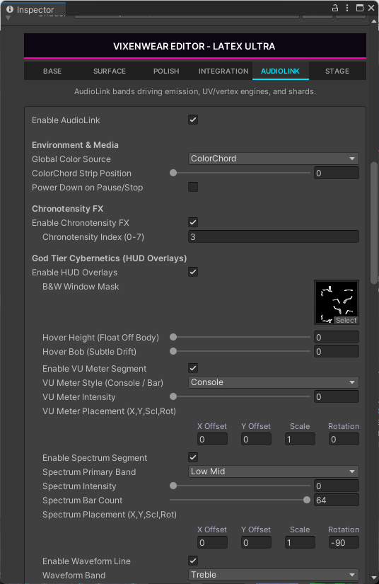
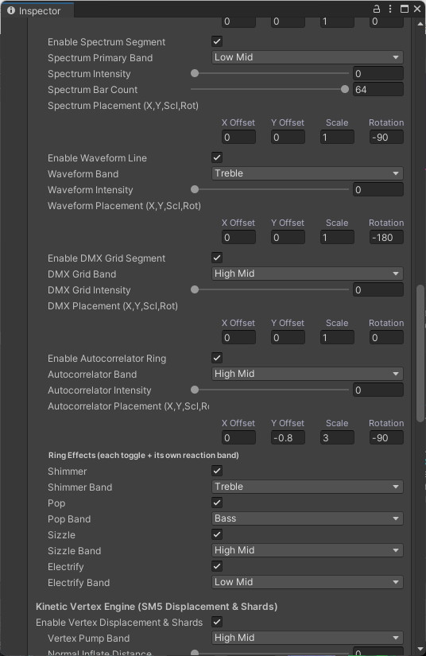
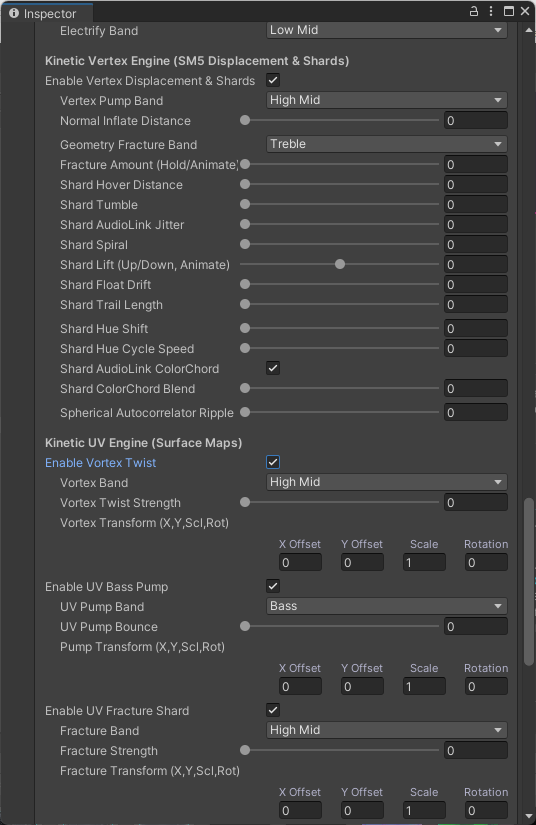
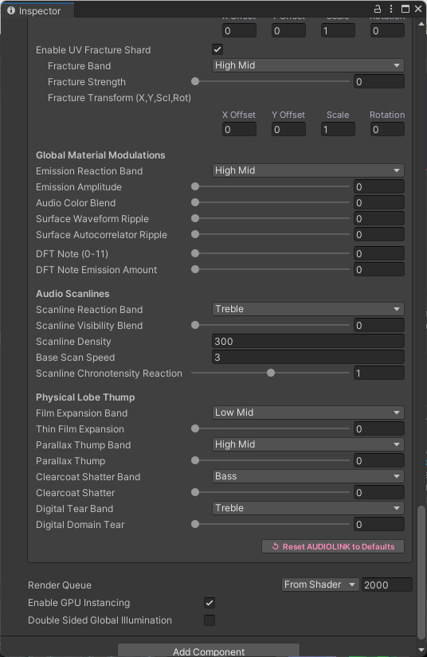
AudioLink.cginc is always compiled and gated at runtime, so VRCFury material-toggle animations can flip these on and off without a build-time variant explosion. HUD passes are PC-only; the SPS variant declares the props inert for inspector parity. Most band selectors offer Bass / Low Mid / High Mid / Treble. Each HUD widget also exposes a Placement (X, Y, Scl, Rot) set - X Offset, Y Offset, Scale, and Rotation that position the overlay on the body.
Master & Environment
- Enable AudioLink - Runtime gate for the entire AudioLink system.
- Global Color Source - Where reactive color comes from (e.g.
ColorChord) for the layers that follow. - ColorChord Strip Position - Position along the full 128-pixel ColorChord strip to sample the global color from.
- Power Down on Pause/Stop - Fades the AudioLink reactivity out when audio is paused or stopped.
Chronotensity FX
- Enable Chronotensity FX - Opt-in toggle for time-based chronotensity reads (avoids extra texture samples for amplitude-only setups).
- Chronotensity Index (0-7) - Which of the eight chronotensity rows drives the time-based breath / drift.
God Tier Cybernetics (HUD Overlays)
- Enable HUD Overlays - Master toggle for the cybernetics HUD.
- B&W Window Mask - Black-and-white mask defining where the HUD overlays draw.
- Hover Height (Float Off Body) - Parallax-out height that lifts the HUD off the surface along the tangent-space view direction.
- Hover Bob (Subtle Drift) - Subtle sine-driven vertical drift so the HUD reads as a floating holographic plane.
- Enable VU Meter Segment - Toggles the VU meter widget.
- VU Meter Style (Console / Bar) -
Barmeters, orConsolewhich renders a full self-playing AudioLink control panel. - VU Meter Intensity - Brightness of the VU widget.
- VU Meter Placement (X, Y, Scl, Rot) - Position, scale, and rotation of the VU widget.
- Enable Spectrum Segment - Toggles the bar-chart spectrum widget.
- Spectrum Primary Band - Which band the spectrum emphasises.
- Spectrum Intensity - Brightness of the spectrum widget.
- Spectrum Bar Count - Number of bars in the spectrum, from 4 to 64.
- Spectrum Placement (X, Y, Scl, Rot) - Position, scale, and rotation of the spectrum.
- Enable Waveform Line - Toggles the oscilloscope waveform widget.
- Waveform Band - Which band drives the waveform.
- Waveform Intensity - Brightness of the waveform.
- Waveform Placement (X, Y, Scl, Rot) - Position, scale, and rotation of the waveform.
- Enable DMX Grid Segment - Toggles the DMX grid readout widget.
- DMX Grid Band - Which band drives the DMX grid.
- DMX Grid Intensity - Brightness of the DMX grid.
- DMX Placement (X, Y, Scl, Rot) - Position, scale, and rotation of the DMX grid.
- Enable Autocorrelator Ring - Toggles the autocorrelator ring with animated angular spokes and a gaussian falloff envelope.
- Autocorrelator Band - Which band drives the ring.
- Autocorrelator Intensity - Brightness of the ring.
- Autocorrelator Placement (X, Y, Scl, Rot) - Position, scale, and rotation of the ring.
Ring Effects (each toggle + its own reaction band) - Four extra effects layered onto the autocorrelator ring, each with an independent reaction band.
- Shimmer + Shimmer Band - A shimmering sparkle on the ring driven by the selected band.
- Pop + Pop Band - A punchy scale pop on the selected band.
- Sizzle + Sizzle Band - A high-frequency sizzle on the selected band.
- Electrify + Electrify Band - An electric arc effect on the selected band.
Kinetic Vertex Engine (SM5 Displacement & Shards)
Vertex displacement plus a full flying-shard system driven by geometry passes (PC only - the SPS shader dissolves via the main-pass clip with no flying shards).
- Enable Vertex Displacement & Shards - Master toggle for the kinetic vertex engine.
- Vertex Pump Band - Which band drives the normal-inflate bass pump.
- Normal Inflate Distance - How far the mesh inflates along its normals on each pump.
- Geometry Fracture Band - Which band drives the geometry fracture dissolve.
- Fracture Amount (Hold/Animate) - Manual hold / animate value that opens the body up as a dissolve.
- Shard Hover Distance - How far freed shards hover off the surface.
- Shard Tumble - Rotational tumble applied to flying shards.
- Shard AudioLink Jitter - Audio-driven positional jitter on the shards.
- Shard Spiral - Spiral motion of shards as they travel.
- Shard Lift (Up/Down, Animate) - Vertical lift / fall of the shard field, animatable.
- Shard Float Drift - Gentle floating drift of the shards.
- Shard Trail Length - Length of the motion trail behind each shard.
- Shard Hue Shift - Static hue offset of the shards.
- Shard Hue Cycle Speed - Speed of the animated hue cycle.
- Shard AudioLink ColorChord - Tints shards from the ColorChord palette.
- Shard ColorChord Blend - How strongly the ColorChord tint blends into the shards.
- Spherical Autocorrelator Ripple - Per-vertex volumetric ripple from the spherical-mapped autocorrelator.
Kinetic UV Engine (Surface Maps)
Surface-space UV motion, each layer tied to a specific FFT band and amplitude-gated so silent worlds never distort the avatar. Each layer has its own Transform (X, Y, Scl, Rot).
- Enable Vortex Twist - Toggles the swirling UV vortex.
- Vortex Band - Which band drives the vortex.
- Vortex Twist Strength - Amount of swirl. Chronotensity breath modulates the envelope when Chronotensity FX is on.
- Vortex Transform (X, Y, Scl, Rot) - Placement of the vortex center.
- Enable UV Bass Pump - Toggles the bass-driven UV scale pump.
- UV Pump Band - Which band drives the pump.
- UV Pump Bounce - Amount the UVs bounce / scale on the beat.
- Pump Transform (X, Y, Scl, Rot) - Placement of the pump center.
- Enable UV Fracture Shard - Toggles spatial-hashed UV fracture shards.
- Fracture Band - Which band drives the UV fracture.
- Fracture Strength - Intensity of the UV shard displacement.
- Fracture Transform (X, Y, Scl, Rot) - Placement of the fracture field.
Global Material Modulations
- Emission Reaction Band - Which band modulates the primary emission.
- Emission Amplitude - How strongly that band drives emission brightness.
- Audio Color Blend - How much the global audio color tints the material.
- Surface Waveform Ripple - Waveform-driven ripple across the surface.
- Surface Autocorrelator Ripple - Autocorrelator-driven ripple across the surface.
- DFT Note (0-11) - Locks emission to a specific musical note across all octaves via the DFT.
- DFT Note Emission Amount - How strongly the chosen note drives emission.
Audio Scanlines
- Scanline Reaction Band - Which band drives the scanlines.
- Scanline Visibility Blend - Overall visibility of the scanline overlay.
- Scanline Density - Number of scanlines across the surface.
- Base Scan Speed - Base scroll speed of the scanlines.
- Scanline Chronotensity Reaction - How much chronotensity modulates the scan speed.
Physical Lobe Thump
Routes specific bands into the physical lighting lobes for beat-synced material behavior.
- Film Expansion Band - Which band drives thin-film expansion.
- Thin Film Expansion - How much the band shifts the thin-film thickness / hue.
- Parallax Thump Band - Which band drives the parallax depth thump.
- Parallax Thump - How much the band pumps parallax depth.
- Clearcoat Shatter Band - Which band drives the clearcoat shatter.
- Clearcoat Shatter - How much the band fractures the clearcoat highlight.
- Digital Tear Band - Which band drives the digital tear glitch.
- Digital Domain Tear - Intensity of the digital glitch / tear.
- Reset AUDIOLINK to Defaults - Restores this tab to shader defaults. The shared render-state row follows - see Shared Footer.
STAGE
VRSL DMX routing, intensity override, kinetic geo-warping, and the additive GI stage wash.
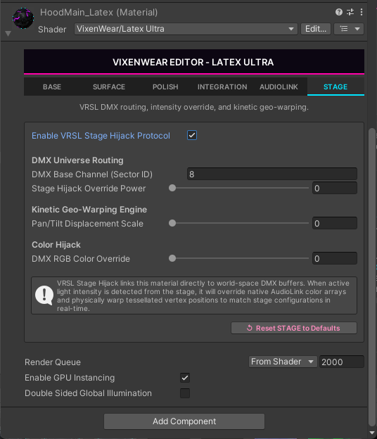
VRSL Stage Hijack links this material directly to world-space DMX buffers. When active light intensity is detected from the stage, it overrides the native AudioLink color arrays and physically warps tessellated vertex positions to match stage configurations in real time, mimicking a 13-channel Moving Head fixture.
Master
- Enable VRSL Stage Hijack Protocol - Master toggle that connects the material to the world's VRSL DMX buffers.
DMX Universe Routing
- DMX Base Channel (Sector ID) - Which fixture sector / base channel this material reads from the DMX universe.
- Stage Hijack Override Power - How strongly the stage data takes over the surface (0 = no override, up = full hijack).
Kinetic Geo-Warping Engine
- Pan/Tilt Displacement Scale - How far the tessellated mesh physically warps to follow the fixture's DMX Pan/Tilt values.
Color Hijack
- DMX RGB Color Override - Lerps the AudioLink color toward live DMX RGB (sector channels +3/+4/+5) so the stage can wash the palette without disabling FFT-driven color movement.
Stage GI Wash (New in 2.5.0)
Separate from the hijack above: instead of overriding emission, the GI wash spills the DMX fixtures' colour onto the suit as real additive light (the stage lighting you up). It reads the same DMX channels as the Color Override and contributes nothing in worlds with no DMX node.
- GI Wash Intensity - Master strength of the additive stage wash. Above 0 enables it.
- GI Specular Mix - Fresnel-weighted specular highlight from the wash.
- GI Color Saturation - Desaturates the wash toward luma so it tints the surface rather than repainting your design.
- Reset STAGE to Defaults - Restores this tab to shader defaults. The shared render-state row follows - see Shared Footer.